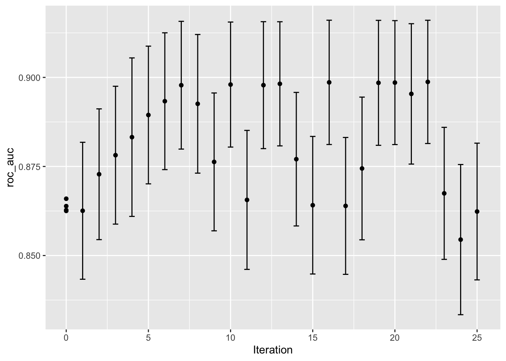

W poprzednich rozdziałach pokazano, jak wyszukiwanie oparte o siatkę przyjmuje wstępnie zdefiniowany zestaw wartości kandydujących, ocenia je, a następnie wybiera najlepsze ustawienia. Iteracyjne metody wyszukiwania realizują inną strategię. Podczas procesu wyszukiwania przewidują one, które wartości należy przetestować w następnej kolejności.
W tym rozdziale przedstawiono dwie metody wyszukiwania. Najpierw omówimy optymalizację bayesowską, która wykorzystuje model statystyczny do przewidywania lepszych ustawień parametrów. Następnie rozdział opisuje metodę globalnego wyszukiwania zwaną symulowanym wyżarzaniem (ang. simulated annealing).
Do ilustracji wykorzystujemy te same dane dotyczące charakterystyki komórek, co w poprzednim rozdziale, ale zmieniamy model. W tym rozdziale użyjemy modelu maszyny wektorów nośnych (ang. Support Vector Machine), ponieważ zapewnia on ładne dwuwymiarowe wizualizacje procesów wyszukiwania. Dwa dostrajane parametry w optymalizacji to wartość kosztu SVM i parametr jądra funkcji radialnej \(\sigma\). Oba parametry mogą mieć znaczący wpływ na złożoność i wydajność modelu.
Model SVM wykorzystuje iloczyn skalarny i z tego powodu konieczne jest wyśrodkowanie i przeskalowanie predyktorów. Obiekty tidymodels: svm_rec, svm_spec i svm_wflow definiują proces tworzenia modelu:
Kod
library(tidymodels)tidymodels_prefer()data(cells)cells<-cells%>%select(-case)set.seed(1304)cell_folds<-vfold_cv(cells)svm_rec<-recipe(class~., data =cells)%>%step_YeoJohnson(all_numeric_predictors())%>%step_normalize(all_numeric_predictors())svm_spec<-svm_rbf(cost =tune(), rbf_sigma =tune())%>%set_engine("kernlab")%>%set_mode("classification")svm_wflow<-workflow()%>%add_model(svm_spec)%>%add_recipe(svm_rec)
Zanim omówimy szczegóły dotyczące wyszukiwania iteracyjnego i jego działania, zbadajmy związek między dwoma parametrami dostrajania SVM a obszarem pod krzywą ROC dla tego konkretnego zestawu danych. Skonstruowaliśmy bardzo dużą regularną siatkę, składającą się z 2500 wartości kandydujących, i oceniliśmy siatkę przy użyciu resamplingu. Jest to oczywiście niepraktyczne w regularnej analizie danych i ogromnie nieefektywne. Jednakże, wyjaśnia ścieżkę, którą powinien podążać proces wyszukiwania i gdzie występuje numerycznie optymalna wartość (wartości).
Rysunek 12.1: Mapa ciepła średniego obszaru pod krzywą ROC dla siatki o dużej gęstości wartości dostrajania parametrów. Najlepszy punkt jest oznaczony kropką w prawym górnym rogu.
Rysunek 12.1 pokazuje wyniki oceny tej siatki, przy czym jaśniejszy kolor odpowiada wyższej (lepszej) wydajności modelu. W dolnej przekątnej przestrzeni parametrów znajduje się duży obszar, który jest stosunkowo płaski i charakteryzuje się słabą wydajnością. Grzbiet najlepszej wydajności występuje w prawej górnej części przestrzeni. Czarna kropka wskazuje najlepsze ustawienia. Przejście od płaskiego obszaru słabych wyników do grzbietu najlepszej wydajności jest bardzo ostre. Występuje również gwałtowny spadek obszaru pod krzywą ROC tuż po prawej stronie grzbietu.
Procedury wyszukiwania, które będziemy przestawiać, wymagają przynajmniej kilku statystyk obliczonych na podstawie resamplingu. W tym celu poniższy kod tworzy małą regularną siatkę, która znajduje się w płaskiej części przestrzeni parametrów. Funkcja tune_grid() dokonuje próbkowania tej siatki:
Ta początkowa siatka pokazuje dość równoważne wyniki, przy czym żaden pojedynczy punkt nie jest znacznie lepszy od pozostałych. Wyniki te mogą być wykorzystane przez funkcje iteracyjnego dostrajania jako wartości początkowe.
12.1 Optymalizacja bayesowska
Techniki optymalizacji bayesowskiej analizują bieżące wyniki próbkowania i tworzą model predykcyjny, aby zasugerować wartości parametrów dostrajania, które nie zostały jeszcze ocenione. Sugerowana kombinacja parametrów jest następnie ponownie próbkowana. Wyniki te są następnie wykorzystywane w innym modelu predykcyjnym, który rekomenduje więcej wartości kandydatów do testowania, i tak dalej. Proces ten przebiega przez ustaloną liczbę iteracji lub do momentu, gdy nie pojawią się dalsze poprawy. Shahriari i in. (2016) i Frazier (2018) są dobrymi wprowadzeniami do optymalizacji bayesowskiej.
Podczas korzystania z optymalizacji bayesowskiej, podstawowe problemy to sposób tworzenia modelu i wybór parametrów rekomendowanych przez ten model. Najpierw rozważmy technikę najczęściej stosowaną w optymalizacji bayesowskiej, czyli model procesu gaussowskiego.
12.1.1 Model procesu gaussowskiego
Modele procesu gaussowskiego (GP) (Schulz, Speekenbrink, i Krause 2016), to techniki statystyczne, które mają swoją historię w statystyce przestrzennej (pod nazwą metod krigingu). Mogą być wyprowadzone na wiele sposobów, w tym jako model Bayesowski.
Matematycznie, GP jest zbiorem zmiennych losowych, których wspólny rozkład prawdopodobieństwa jest wielowymiarowy normalny. W kontekście naszych zastosowań jest to zbiór metryk wydajności dla wartości kandydujących parametrów dostrajania. Dla początkowej siatki czterech próbek, realizacje tych czterech zmiennych losowych wynosiły 0.8639, 0.8625, 0.8627 i 0.8659. Zakłada się, że mają rozkład wielowymiarowy normalny. Wejściami definiującymi zmienne niezależne dla modelu GP są odpowiednie wartości dostrajania parametrów (przedstawione w Tabela 12.1).
Tabela 12.1: Wartości startowe w procedurze poszukiwania optymalnych parametrów
ROC
cost
rbf_sigma
0.8639
0.01562
1e-06
0.8625
2.00000
1e-06
0.8627
0.01562
1e-04
0.8659
2.00000
1e-04
Modele procesów gaussowskich są określone przez ich funkcje średniej i kowariancji, choć to ta ostatnia ma większy wpływ na charakter modelu GP. Funkcja kowariancji jest często parametryzowana w kategoriach wartości wejściowych (oznaczanych jako \(x\)). Przykładowo, powszechnie stosowaną funkcją kowariancji jest funkcja wykładnicza kwadratowa:
gdzie \(\sigma_{i,j}^2\) jest wariancją błędu modelu równą zero jeśli \(i=j\). Możemy to interpretować jako, że wraz ze wzrostem odległości pomiędzy dwoma kombinacjami parametrów, kowariancja pomiędzy metrykami wydajności rośnie wykładniczo. Z równania wynika również, że zmienność metryki wynikowej jest minimalizowana w punktach, które już zostały zaobserwowane (tzn. gdy \(|x_i - x_j|^2\) wynosi zero). Charakter tej funkcji kowariancji pozwala procesowi gaussowskiemu reprezentować wysoce nieliniowe zależności między wydajnością modelu a dostrajaniem parametrów, nawet jeśli istnieje tylko niewielka ilość danych.
Ważną zaletą tego modelu jest to, że ponieważ określony jest pełny model prawdopodobieństwa, przewidywania dla nowych wejść mogą odzwierciedlać cały rozkład wyniku. Innymi słowy, nowe statystyki wydajności mogą być przewidywane zarówno pod względem średniej jak i wariancji.
Na podstawie początkowej siatki czterech wyników, model GP jest dopasowywany, następnie są obliczane z modelu predykcje dla kandydatów, a piąta kombinacja parametrów dostrajania jest wybierana. Obliczamy szacunkową wydajność dla nowej konfiguracji, GP jest ponownie dopasowywany do pięciu istniejących wyników (i tak dalej).
12.1.2 Funkcja akwizycji
Jak wykorzystać model procesu gaussowskiego po dopasowaniu do aktualnych danych? Naszym celem jest wybranie następnej kombinacji dostrajania parametrów, która najprawdopodobniej da “lepsze wyniki” niż obecna najlepsza. Jednym z podejść do tego jest stworzenie dużego zbioru kandydatów, a następnie wykonanie prognoz średniej i wariancji dla każdego z nich. Korzystając z tych informacji, wybieramy najkorzystniejszą wartość parametru dostrajania.
Klasa funkcji celu, zwanych funkcjami akwizycji, ułatwia kompromis pomiędzy średnią a wariancją. Przypomnijmy, że przewidywana wariancja modeli GP zależy głównie od tego, jak bardzo są one oddalone od istniejących danych. Kompromis pomiędzy przewidywaną średnią i wariancją dla nowych kandydatów jest często postrzegany przez pryzmat eksploracji i eksploatacji:
Eksploracja (ang. exploration) - powoduje wybór tych regionów, w których jest mniej obserwowanych modeli kandydujących. W ten sposób nadaje się większą wagę kandydatom o wyższej wariancji i koncentruje się na poszukiwaniu nowych wyników.
Eksploatacja (ang. exploitation) - zasadniczo opiera się istniejących wynikach, w celu odnalezienia najlepszej wartości średniej.
Aby zademonstrować, spójrzmy na przykład z jednym parametrem, który ma wartości pomiędzy [0, 1], a metryką wydajności jest \(R^2\). Prawdziwa funkcja jest pokazana na Rysunek 12.2 wraz z pięcioma wartościami kandydującymi, które mają istniejące wyniki jako punkty.
Rysunek 12.2: Hipotetyczny rzeczywisty profil wydajności dla arbitralnie wybranego parametru dostrajania, z pięcioma szacowanymi punktami
Dla tych danych dopasowanie modelu GP przedstawiono na Rysunek 12.3. Zacieniowany obszar wskazuje średnią \(\pm\) 1 błąd standardowy. Dwie pionowe linie wskazują dwa punkty kandydujące, które są później bardziej szczegółowo badane. Zacieniowany obszar ufności pokazuje funkcję wykładniczej wariancji kwadratowej; staje się ona bardzo duża między punktami i zbiega do zera w istniejących punktach danych.
Rysunek 12.3: Przykładowy przebieg procesu gaussowskiego z zaznaczoną funkcją średniej i wariancji
Ta nieliniowa funkcja przechodzi przez każdy obserwowany punkt, ale model nie jest doskonały. Nie ma obserwowanych punktów w pobliżu prawdziwego optimum ustawienia, a w tym regionie dopasowanie mogłoby być znacznie lepsze. Pomimo tego, model GP może skutecznie wskazać nam właściwy kierunek.
Z punktu widzenia czystej eksploatacji, najlepszym wyborem byłoby wybranie wartości parametru, który ma najlepszą średnią predykcję. W tym przypadku byłaby to wartość 0,106, tuż na prawo od istniejącego najlepszego zaobserwowanego punktu na poziomie 0,09.
Jako sposób na zachęcenie do eksploracji, prostym (ale nie często stosowanym) podejściem jest znalezienie parametru dostrajania związanego z największym przedziałem ufności.
Jedną z najczęściej stosowanych funkcji akwizycji jest oczekiwana poprawa. Pojęcie poprawy wymaga wartości dla bieżących najlepszych wyników (w przeciwieństwie do podejścia opartego na przedziałach ufności). Ponieważ GP może opisać nowy punkt kandydacki za pomocą rozkładu, możemy ważyć fragmenty rozkładu, które wykazują poprawę, używając prawdopodobieństwa wystąpienia poprawy.
Na przykład, rozważmy dwie wartości parametrów kandydujących 0,10 i 0,25 (wskazane przez pionowe linie na Rysunek 12.3). Używając dopasowanego modelu GP, ich przewidywane \(R^2\) są pokazane na rysunku 14.4 wraz z linią odniesienia dla aktualnych najlepszych wyników.
Rysunek 12.4: Przewidywane rozkłady wydajności dla dwóch próbkowanych wartości parametrów dostrajania
Rozpatrując tylko średnią \(R^2\) lepszym wyborem jest wartość parametru 0,10 (patrz Tabela 12.1). Rekomendacja parametru dostrajania dla 0,25 ma gorsze przewidywanie średnie niż aktualny najlepszy kandydat. Jednakże, ponieważ ma wyższą wariancję, ma większy ogólny obszar prawdopodobieństwa powyżej aktualnego najlepszego. W rezultacie ma większą oczekiwaną poprawę:
Tabela 12.2: Oczekiwana poprawa dla dwóch kandydujących parametrów dostrajania.
Parameter.Value
Mean
Std.Dev
Expected.Improvment
0.10
0.8679
0.0004317
0.000190
0.25
0.8671
0.0039301
0.001216
Kiedy oczekiwana poprawa jest obliczana w całym zakresie dostrajania parametrów, zalecany punkt do próbkowania jest znacznie bliższy 0,25 niż 0,10, jak pokazano na rysunku 14.5.
Rysunek 12.5: Szacowany profil wydajności wygenerowany przez model procesu gaussowskiego (górny panel) oraz oczekiwana poprawa (dolny panel). Pionowa linia wskazuje punkt maksymalnej poprawy.
Aby zaimplementować wyszukiwanie iteracyjne poprzez optymalizację bayesowską, należy użyć funkcji tune_bayes(). Jej składnia jest bardzo podobna do tune_grid(), z kilkoma dodatkowymi argumentami:
iter to maksymalna liczba iteracji wyszukiwania.
initial może być liczbą całkowitą, obiektem utworzonym przy pomocy tune_grid(), albo jedną z funkcji wyścigowych. Użycie liczby całkowitej określa rozmiar konstrukcji wypełniającej przestrzeń, która jest próbkowana przed pierwszym modelem GP.
objective jest argumentem, dla którego należy użyć funkcji akwizycji. Pakiet tune zawiera funkcje takie jak exp_improve() lub conf_bound().
Argument param_info, w tym przypadku określa zakres parametrów, jak również wszelkie transformacje.
Argument control funkcji tune_bayes() ustawia się za pomocą control_bayes(). Niektóre istotne argumenty to:
no_improve to liczba całkowita, która zatrzyma wyszukiwanie, jeśli ulepszone parametry nie zostaną odkryte w ciągu iteracji no_improve.
uncertain jest również liczbą całkowitą (lub Inf), używaną do ustalenia liczby przejść algorytmu wg reguły eksploatacji bez poprawy, aby następnie wybrać próbę z zakresu z wysoką wariancją, po to żeby dokonać eksploracji.
verbose jest parametrem, który decyduje co będzie się wyświetlało podczas przebiegu algorytmu.
Użyjmy pierwszych wyników SVM jako początkowego podłoża dla modelu GP. Przypomnijmy, że w tym zastosowaniu chcemy zmaksymalizować obszar pod krzywą ROC.
Kod
# cache: truectrl<-control_bayes(verbose =TRUE)set.seed(1403)svm_bo<-svm_wflow%>%tune_bayes( resamples =cell_folds, metrics =roc_res, initial =svm_initial, param_info =svm_param, iter =25, control =ctrl)
Kod
collect_metrics(svm_bo)|>gt()
cost
rbf_sigma
.metric
.estimator
mean
n
std_err
.config
.iter
1.562500e-02
1.000000e-06
roc_auc
binary
0.8638724
10
0.008637894
Preprocessor1_Model1
0
2.000000e+00
1.000000e-06
roc_auc
binary
0.8625326
10
0.008672545
Preprocessor1_Model2
0
1.562500e-02
1.000000e-04
roc_auc
binary
0.8627495
10
0.008624554
Preprocessor1_Model3
0
2.000000e+00
1.000000e-04
roc_auc
binary
0.8659439
10
0.008545691
Preprocessor1_Model4
0
8.381539e+00
5.408960e-07
roc_auc
binary
0.8625673
10
0.008627089
Iter1
1
5.608902e+00
1.613260e-04
roc_auc
binary
0.8728182
10
0.008236644
Iter2
2
1.600639e+01
1.983450e-04
roc_auc
binary
0.8781692
10
0.008684509
Iter3
3
2.541191e+01
2.585081e-04
roc_auc
binary
0.8832282
9
0.009833644
Iter4
4
2.912115e+01
3.961177e-04
roc_auc
binary
0.8894476
10
0.008674057
Iter5
5
2.282106e+01
7.094282e-04
roc_auc
binary
0.8933213
10
0.008618012
Iter6
6
3.049977e+01
1.166976e-03
roc_auc
binary
0.8978111
10
0.008046705
Iter7
7
3.155839e+01
2.888618e-03
roc_auc
binary
0.8925884
9
0.008601545
Iter8
8
1.312493e-03
9.584302e-02
roc_auc
binary
0.8762837
10
0.008684225
Iter9
9
2.908667e+01
1.420931e-03
roc_auc
binary
0.8979937
10
0.007875059
Iter10
10
1.058781e-03
2.364654e-03
roc_auc
binary
0.8656167
10
0.008754313
Iter11
11
3.154910e+01
1.210898e-03
roc_auc
binary
0.8978275
10
0.007994954
Iter12
12
3.073241e+01
1.451115e-03
roc_auc
binary
0.8982018
10
0.007819465
Iter13
13
3.033878e+01
9.917137e-02
roc_auc
binary
0.8770458
10
0.008412071
Iter14
14
1.129147e-03
1.026267e-07
roc_auc
binary
0.8641243
10
0.008666403
Iter15
15
3.111979e+01
1.698500e-03
roc_auc
binary
0.8986102
10
0.007828958
Iter16
16
1.128109e-03
9.256031e-06
roc_auc
binary
0.8639301
10
0.008622849
Iter17
17
9.925669e-04
2.237736e-02
roc_auc
binary
0.8744407
10
0.008990285
Iter18
18
3.133523e+01
1.896086e-03
roc_auc
binary
0.8984786
10
0.007870489
Iter19
19
3.064022e+01
1.581975e-03
roc_auc
binary
0.8985440
10
0.007808150
Iter20
20
1.480665e+01
1.821641e-03
roc_auc
binary
0.8953765
9
0.008709148
Iter21
21
3.184368e+01
1.715154e-03
roc_auc
binary
0.8987420
10
0.007764247
Iter22
22
2.927864e+01
8.793267e-06
roc_auc
binary
0.8674531
10
0.008316968
Iter23
23
2.878067e+01
2.244728e-02
roc_auc
binary
0.8544690
10
0.009459848
Iter24
24
1.456602e+01
1.021120e-07
roc_auc
binary
0.8623536
10
0.008611959
Iter25
25
Kod
show_best(svm_bo)|>gt()
cost
rbf_sigma
.metric
.estimator
mean
n
std_err
.config
.iter
31.84368
0.001715154
roc_auc
binary
0.8987420
10
0.007764247
Iter22
22
31.11979
0.001698500
roc_auc
binary
0.8986102
10
0.007828958
Iter16
16
30.64022
0.001581975
roc_auc
binary
0.8985440
10
0.007808150
Iter20
20
31.33523
0.001896086
roc_auc
binary
0.8984786
10
0.007870489
Iter19
19
30.73241
0.001451115
roc_auc
binary
0.8982018
10
0.007819465
Iter13
13
Kod
autoplot(svm_bo, type ="performance")

Poniższa animacja wizualizuje wyniki wyszukiwania. Czarne “x” pokazują wartości początkowe zawarte w svm_initial. Niebieski panel u góry po lewej stronie pokazuje przewidywaną średnią wartość obszaru pod krzywą ROC. Czerwony panel na górze po prawej stronie pokazuje przewidywaną zmienność wartości ROC, podczas gdy dolny wykres wizualizuje oczekiwaną poprawę. W każdym panelu ciemniejsze kolory wskazują mniej atrakcyjne wartości (np. małe wartości średnie, duże zróżnicowanie i małe ulepszenia).
Rysunek 12.6: Przykład działania optymalizacji bayesowskiej
Powierzchnia przewidywanej średniej jest bardzo niedokładna w pierwszych kilku iteracjach wyszukiwania. Pomimo tego, pomaga ona poprowadzić proces w rejon dobrej wydajności. W ciągu pierwszych dziesięciu iteracji, wyszukiwanie jest dokonywane w pobliżu optymalnego miejsca.
Podczas gdy najlepsza kombinacja dostrajania parametrów znajduje się na granicy przestrzeni parametrów, optymalizacja bayesowska często wybierze nowe punkty poza granicami przestrzeni parametrów.
Powyższy przykład startował z punktów startowych wybranych nieco arbitralnie ale nieco lepsze wyniki można osiągnąć stosując losowe wypełnienie przestrzeni parametrów.
Schulz, Eric, Maarten Speekenbrink, i Andreas Krause. 2016. „A tutorial on Gaussian process regression: Modelling, exploring, and exploiting functions”. http://dx.doi.org/10.1101/095190.
Shahriari, Bobak, Kevin Swersky, Ziyu Wang, Ryan P. Adams, i Nando de Freitas. 2016. „Taking the Human Out of the Loop: A Review of Bayesian Optimization”. Proceedings of the IEEE 104 (1): 148–75. https://doi.org/10.1109/jproc.2015.2494218.